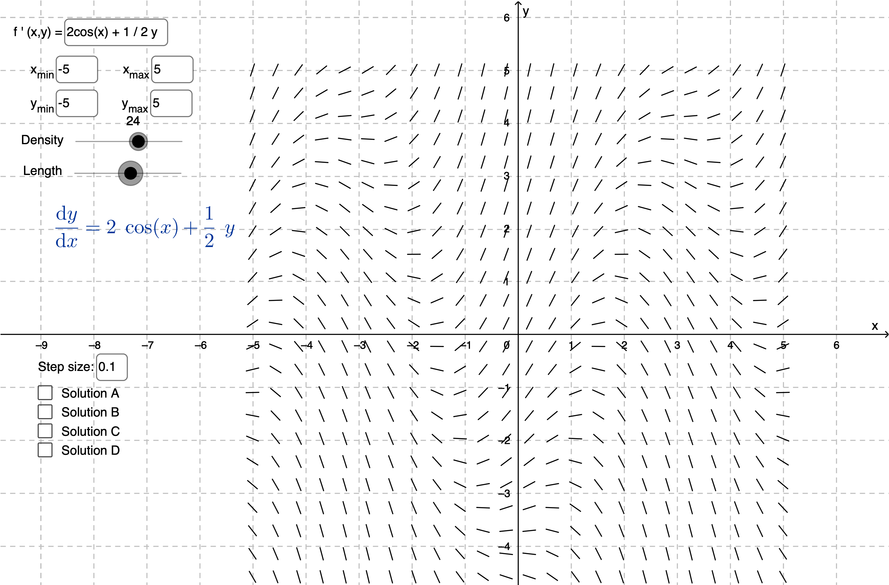

Homework 2 Oracle
Chapter 2.1
Problem 13

Part a
As \(t\) gets infinitely large, it simply oscillates in an inverse cosine fashion. \(a\) does give the function an initial starting point, to which it starts oscillating from. That would probably be \(a + \pi\) because \(2cos(t)\) changes its behaviour every \(\pi\) revolution.
Part b
This is a first-order linear differential equation of the form \(y' + p(t) y = q(t)\). Find \(\mu(t) = e^{\int{-\frac{1}{2}}}\) and then solve \(\frac{d}{dt}(\mu(t)y) = q(t) \mu(t)\) \(\implies y = \frac{\int q(t) \mu(t) dt}{\mu(t)}\). You should get
\begin{equation*} y(t) = ce^{t/2}+\frac{8}{5}\sin(t)-\frac{4}{5}\cos(t) \end{equation*}Then solving for \(y(0)\) and \(c\), we have the full solution to be
\begin{equation*} y(t) = (a+\frac{4}{5}e^{t/2})+\frac{8}{5}\sin(t)-\frac{4}{5}\cos(t) \end{equation*}Part c
\(y\) oscillates for \(a=a_0\)
Problem 15
Part a
This is again, a first-order linear differential equation, so we do our \(\mu\) and integration from both sides trick. Recognize that we have to divide everything by \(t\), so that our lead \(y'\) doesn't have a coefficient and the method for solving this type of equations is applicable.
\begin{equation*} ty'+(t+1)y = 2 t e^{-t} \iff y' + (\frac{t+1}{t})y = 2 e^{-t} \end{equation*}After cleaning it up, the actual solution process becomes more or less trivial, \(\mu(t) = e^{\int{\frac{t+1}{t}}} = te^t\). Then we find for \(t>0\)
\begin{equation*} y(t) = \frac{ce^{-t}}{t} + e^{-t}t \end{equation*}Applying \(y(1) = a\), then we get
\begin{equation*} y(t) = te^{-t} + \frac{(ea-1)e^{-t}}{t} \end{equation*}We need \(ea-1\) to be equal to zero, then \(a_0 = \frac{1}{e}\)
Part c
As \(t \to 0\), then \(y \to 0\).
Problem 17
Recall the solution to Problem 13. We need to swap the sign on \(p(t)\) and update the initial value constant solution. We will get
\begin{equation*} y(t) = -\frac{9}{5}e^{t/2}+\frac{8}{5}\sin(t)+\frac{4}{5}\cos(t) \end{equation*}Set the derivative of \(y\) to \(0\) and solve for \(t\).
\begin{equation*} 0 = -\frac{9}{5}\times (-\frac{1}{2}) \times e^{t/2}+\frac{8}{5}\cos(t)-\frac{4}{5}\sin(t) \end{equation*}You can check the nature of the point by taking \(y''\). Finally, we find that the local maximum is at \((t, y) = (1.36, 0.82)\). Better approximated values are accepted.
Problem 20
The solution process is similar to the problem of 17, you should get a general solution for \(y\):
\begin{equation*} y = -1 - \frac{3}{2}(\sin t + \cos t) + C e^t \end{equation*}where \(C\) is a constant. Solving \(y(0) = y_0\) for \(y_0\) yields that \(C = y_0 + \frac{5}{2}\) so then the solution is \(y_0 = -\frac{5}{2}\).
Problem 28
Part a
Recall the form \(y' + p(t) y = g(t)\) and solution form of
\begin{equation*} \frac{d}{dt}(\mu(t)y) = g(t) \mu(t) \end{equation*}Then if \(g(t)=0\), solution is \(y = A e^{-\int{p(t)dt}}\)
Part b
Simply substitute (50) into (48), perform some trivial Chain Rule and confirm that
\begin{equation*} A'(t) = g(t) \exp\left(\int p(t) dt\right) \end{equation*}Part c
Substitution is mechanical. Prove that variation of parameters works.
Chapter 2.2
Problem 1
then
\begin{equation*} \int y dy = \int x^2 dx \end{equation*}So the solution is
\begin{equation*} 3y^2-2x^3=C \end{equation*}It's OK to leave the solution implicitly here, otherwise, the explicit solution for \(y\) can be very nasty.
Problem 7
then
\begin{equation*} \int \frac{dy}{y} = \int \frac{dx}{x} \end{equation*}Then
\begin{equation*} \ln(y) = ln(x) + ln(C) = ln(C\times x) \end{equation*}\(C\) is any constant, then \(\ln(C)\) is also a constant. Finally, \(y = Cx\)
Problem 8
then
\begin{equation*} \int y dy = - \int x dx \end{equation*}Therefore
\begin{equation*} y^2 + x^2 = C \end{equation*}It's fine if you wrote \(y = \pm \sqrt{C - x^2}\)
Problem 21
Part a
As \(t \to \infty\), then \(y \to 4\)
Part b
First, you will have to solve the system, which is a first-order separable ordinary differential equation. The implicit solution is
\begin{equation*} \frac{3}{4} \ln(\frac{4}{4-5}) = \frac{t^2}{2} + C \end{equation*}where \(C = \frac{3}{4} \ln(\frac{y_0}{4-y_0})\).
Solve for \(t\), so
\begin{equation*} t = \sqrt{\frac{3}{2} \ln\left(\frac{y(4-y_0)}{y_0(4-y)}\right)} \end{equation*}Use \(y = 3.98\) and \(y_0 = 0.5\), then \(t \approx 3.29527\).
Problem 25
Part a
Simple divide both the numerator and the denominator by \(x\).
Part b
You should get
\begin{equation*} \frac{dy}{dx} = v + x \frac{dv}{dx} \end{equation*}Part c
This is simply to show.
Part d
Yet another separable equation, you should get the implicit solution
\begin{equation*} x^4 \left| 2 - v \right| \left| v + 2 \right|^3 = C \end{equation*}Part e
Rearrange to get
\begin{equation*} |y+2x|^3 |2x-y| = C \end{equation*}Part f
It's like a 1/x star.